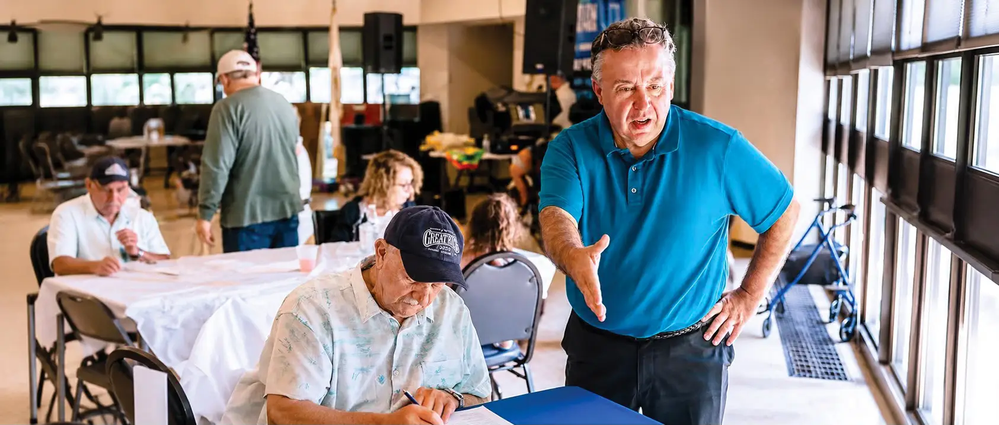
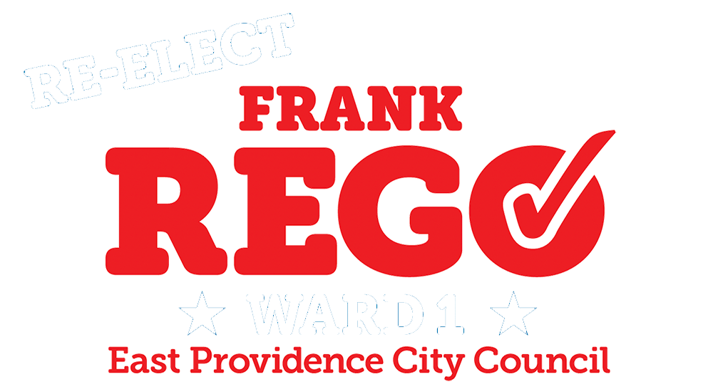

Out in the community
A Record of Results.
Four years of showing up, listening, and delivering for the families, businesses, and neighborhoods of Ward 1.
✓ Protecting Our Families
- Supported the renovation of the East Providence Police Station
- Expanded rescue coverage at Fire Station #3, and continues pushing for full 24-hour service
- Delivered traffic safety improvements throughout Ward 1
✓ Community Investment
- Cast the deciding vote for the new Community Center
- Secured funding for school improvements at Myron J. Francis & Orlo Avenue Elementary
- Championed park upgrades, including an ADA-accessible playground at Kent Field
✓ Smart Growth
- Sponsored new ADU standards for responsible development
- Introduced mixed-use zoning to spur economic growth
- Spearheaded East Providence Restaurant Week
My Priorities
What I'll keep fighting for in a second term.
- ✓ Strong public safety for East Providence
- ✓ Ward 1 infrastructure investment
- ✓ Quality education for all students
- ✓ Fiscally responsible budgets
- ✓ Economic growth & responsible housing
- ✓ A strong voice for Ward 1
About Frank
Lifelong East Providence resident. Ward 1 Councilman and City Council Vice President.
City of East Providence
• Ward 1 City Council
• City Council Vice President
Family
Son of the late Luis & Mary Rego. Husband of Lisa. Father of Chelsea, Adam, and Joey.
Education
• St. Raphael Academy
• Rhode Island College
Occupation
Owner of an East Providence-based company
Volunteer & Civic
- Rumford Little League: coach, board member, president
- AYSO: coach, board member
- St. Margaret: CYO coach
- Rumford Lions: Vice President
- Groden Center Parents & Friends Autism Society of RI
- Boys & Girls Club of Pawtucket: coach
- EP Tax Review Board
- RI Board of Elections
- EP Heritage Days Committee

Stay With Us Through Election Day
Campaign updates, community news, and my continued work for Ward 1 — all in one place.
Follow the Campaign on Facebook